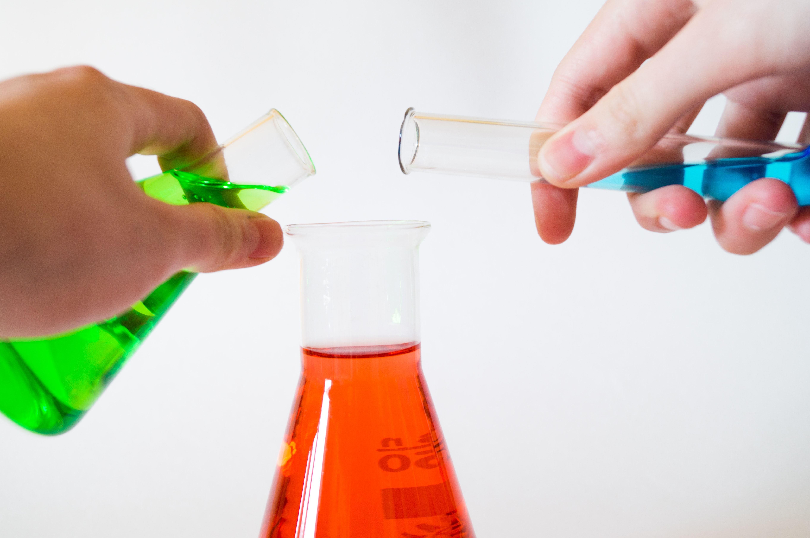

<html>

<head>
    <title>Chemistry</title>
    <link href="style.css" rel="stylesheet" type="text/css">
    <link href="https://fonts.googleapis.com/css2?family=Open+Sans+Condensed:ital,wght@1,300&display=swap" rel="stylesheet">
</head>

</html>

<body>
    <h1><u>Eighth Grade Chemistry Classes</u></h1><br>
    <hr><br>
    <br><br>
    <p style="margin-left: 50px; margin-right: 50px; text-align: center; ">
        As I walked into the Chemistry class on a bright sunny morning, I was surprised to be greeted by an unfamiliar face. To my horror, I was told that my old teacher had gone on leave due to illness. With exams just a month away and four difficult chapters
        remaining, my heart sank like a sinking ship. All my classmates missed the thought provoking Eighth standard experiments. Our teacher had the ability to go beyond the text book and expand our horizon. I had learnt the art of tackling the same
        problems in different ways. Our Chemistry lessons came to life in her classroom. We sent her a card wishing her a speedy recovery. The new teacher who was primarily a Physics teacher, tried hard to fit in her shoes. Somehow things didn’t work
        out and we were struggling. Looking at our bleak near future, our hearts were filled with fear. I believe I was feeling low. I realized that I had to discuss this with somebody. Reflecting on the issue with my trusted parents, my loving mother
        reminded me of the story of Eklavya. He was a mythological prince who had been rejected by his guru Dronacharya. Later he went on to become an expert in archery without the physical presence of the teacher. In my opinion it was a wonderful moment.
        I delved into resources available on the internet, books and other study material to understand the various concepts. I realized that the sources were unlimited. It was only a glimpse of an endless tunnel. I saw the light shining at the end of
        it. In a week’s time, I was well ahead of class. I decided to share my experiment with my classmates during free time. A few people in our group suggested that we can form study groups. We called ourselves ‘The Eighth Element.’ The newest member
        of our group was the new teacher who was delighted to take part in the support sessions. We met three times a day in the Chemistry lab with our problems. Each of us pitched in to get a better perspective. In a months’ time, we were ready to take
        up the examinations. Our new teacher introduced us to a different methodology to tackle various problems in the examination. But we still missed our old teacher. The Sunday before our exams, our group visited her residence. She helped us with
        her effective tips. I had transformed into an enthusiastic learner for life. I could figure out new things on my own, try different experiments and learn to solve my own problems. Self – learning also helped me structure my way of learning and
        how to learn from others without using much of their time. I had the pleasure to work individually as well as with other people. As a group we helped each other in strengthening our weaknesses. The other students were inspired by the idea of study
        groups and now it has become a norm. Even today, our friendship remains as strongly bonded as that of Hydrochloric acid.
    </p>
    <hr>
</body>

</html>